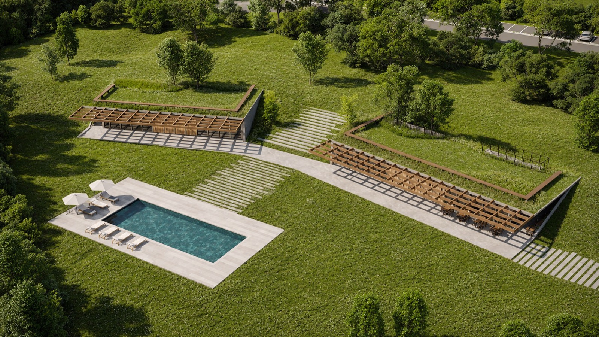
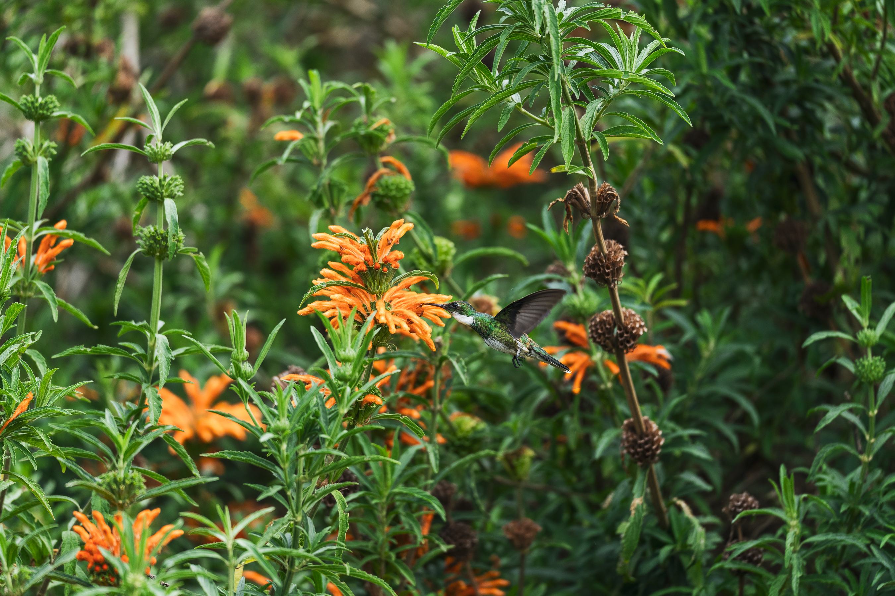
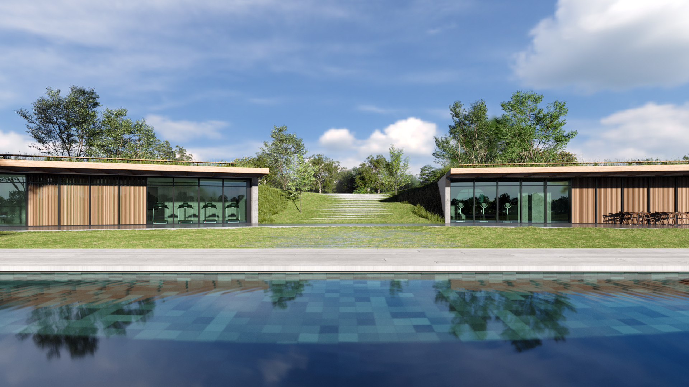
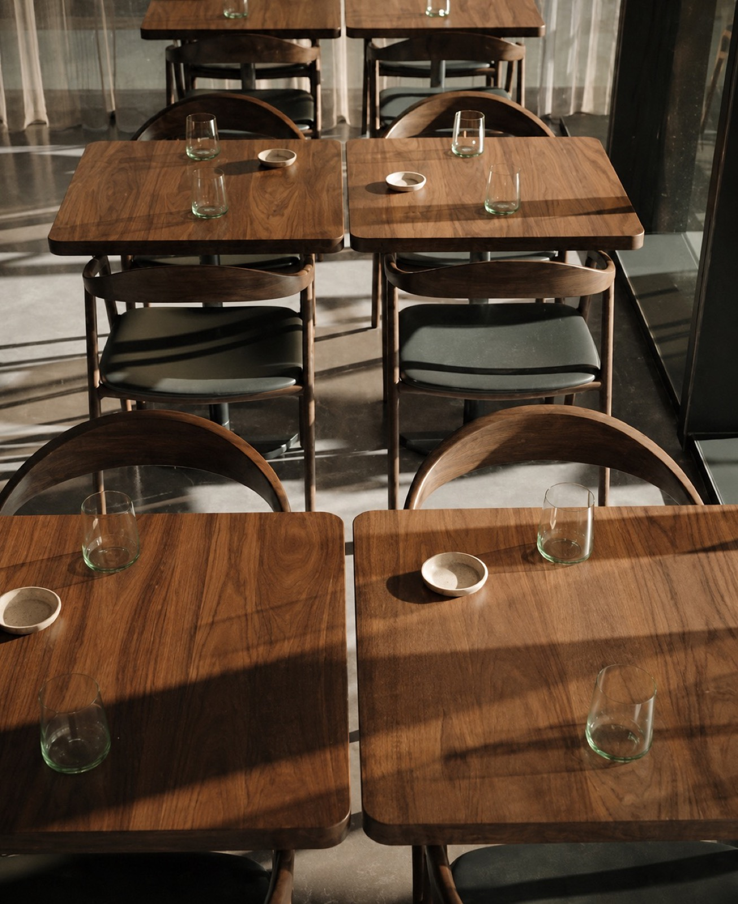
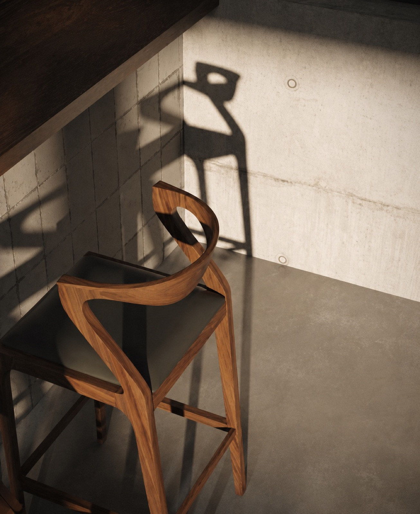
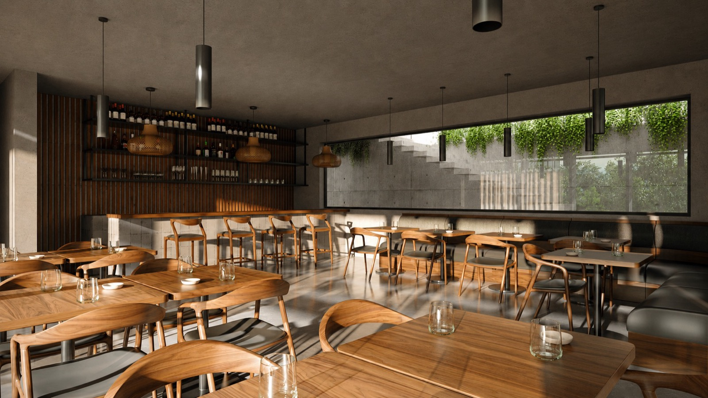
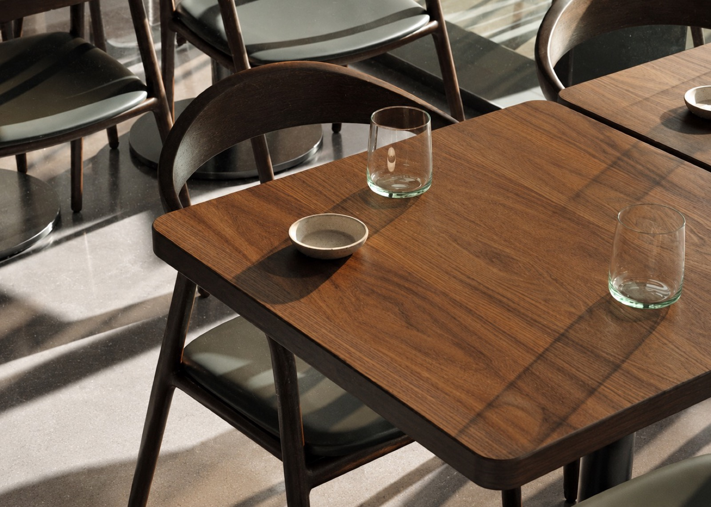

Clubhouse Barrio Cardano
Arquitectura que surge del terreno
CLIMA /
Templado Subtropical
BIOMA /
Pampa
TERRENO /
5.800 m²
ÁREA CUBIERTA /
450 m²
UBICACIÓN /
Buenos Aires, Argentina


Como núcleo social del barrio, el diseño propone un espacio de encuentro contenido y silencioso, donde la arquitectura reduce estímulos visuales innecesarios y dirige la experiencia hacia el paisaje.
El edificio emerge de la tierra y modela una topografía que rodea la pileta, aislándola visualmente del entorno inmediato. Así, el conjunto construye un ámbito de privacidad y calma, centrado en el descanso y el disfrute.


El clubhouse se organiza en dos volúmenes independientes, cada uno con un programa específico, dispuestos de manera simétrica en torno al espacio central. Esta configuración refuerza la claridad funcional y construye un equilibrio formal que ordena el conjunto.
Ambos módulos se abren mediante profundas galerías que actúan como espacios intermedios, regulando la
relación entre interior y exterior. Estas galerías protegen de la radiación solar, permiten la ventilación y
extienden el uso hacia el parque.
La disposición del programa y la sectorización de los espacios responden también a criterios acústicos,
diferenciando áreas de encuentro más activas de aquellas destinadas al descanso. De este modo, el proyecto
equilibra sociabilidad y privacidad, garantizando una experiencia confortable en todo el conjunto.



La arquitectura se desarrolla por debajo del nivel natural del terreno, modificando la percepción del paisaje y generando una experiencia de privacidad.
En contraste con la densidad habitacional del barrio, el clubhouse se configura como un espacio aislado y sereno, habitable a lo largo del día y la noche.

